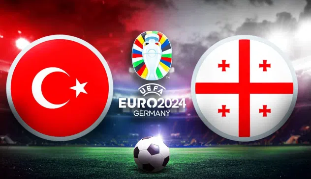
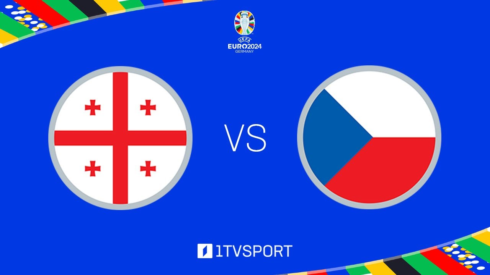
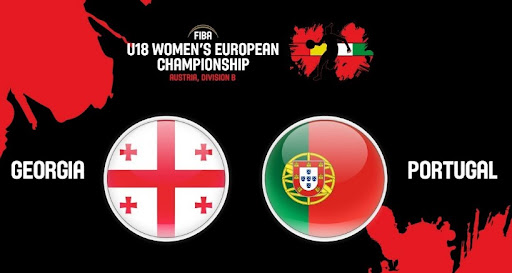

საქართველო-თურქეთი
თურქეთი-საქართველო 3:1. ევროპის ჩემპიონატზე პირველი გოლი გიორგი მიქაუტაძემ გაიტანა. საქართველოს საფეხბურთო ნაკრებმა ევროპის ჩემპიონატზე პირველი მატჩი თურქეთთან ანგარიშით 3:1 დათმო.
მატჩი ორმხრივად დაძაბული გამოდგა. ქართველ ფეხბურთელებს მრავლად ჰქონდათ გამოუყენებელი საგოლე მომენტები. არანაკლებ მძაფრი იყო თურქების შეტევები.
კითხვის გაგრძელება...

საქართველო-ჩეხეთი
ევროპის ჩემპიონატზე საქართველო-ჩეხეთის ნაკრებებს შორის მატჩი ფრედ, 1:1 დასრულდა. შესაბამისად, საქართველოს ნაკრებმა ჩემპიონატზე პირველი ქულა მოიპოვა. მატჩის პირველი გოლი საქართველოს ნაკრების ფეხბურთელმა, გიორგი მიქაუტაძემ 45-ე წუთზე 11- მეტრიანით გაიტანა. ჩეხებმა ანგარიშის გათანაბრება მატჩის მეორე ნახევარში შეძლეს. შეხვედრა ჰამბურგში, „ვოლკსპარკშტადიონზე“ მიმდინარეობდა.
კითხვის გაგრძელება...

საქართველო-პორტუგალია
საქართველოს ნაკრებმა პორტუგალია ისტორიულ მატჩში დაამარცხა. თამაში ანგარიშით 2:0 დასრულდა. მოწინააღმდეგის კარში პირველი გოლი ხვიჩა კვარაცხელიას, ხოლო მეორე გიორგი მიქაუტაძეს ეკუთვნის. ამ შედეგით საქართველო ევროპის ჩემპიონატის მერვედფინალში გავიდა.
კითხვის გაგრძელება...